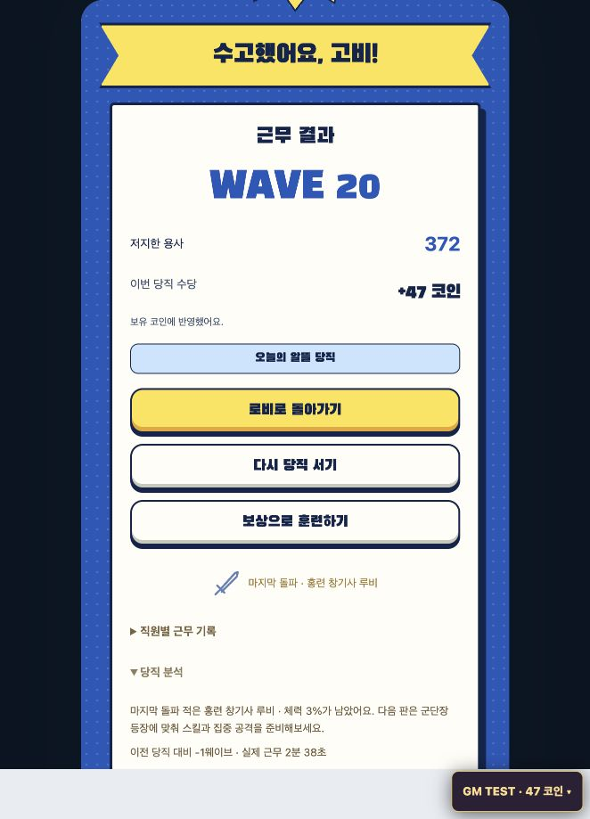

2026-11-21 · 기준 게임 5af58b3 · 게임 수치 변경 없이 로딩 개선
누르고 있기로 빈칸을 채우고 여러 쌍을 합성하는 흐름은 빨라졌다. 하지만 초반부터 SP가 충분해지고, 합성할 짝과 빈칸이 다음 행동을 결정한다. 모든 군단장을 일괄 강화·약화할 근거는 없다.
공개 게임의 GM 격리 세션(실제 저장 덮어쓰기 없음), 시작 코인 0, 기본 5명, 훈련 Lv.1 / +0%, 지원 영웅 없음. UI로 소환·합성·장비·스킬 조작. 표시된 일일 변주가 적용되므로 아래 시뮬레이션과 동일 조건은 아니다.
마지막 조작 후 로딩 검증 중 전투가 계속되어 종료되었다. 최종 패배를 집중 플레이 기준의 난이도 측정으로 해석하지 않는다. 직접 플레이에서는 짝 찾기 부담을 관찰했으며, 장시간 합성 불가 상태는 아래 자동 실험에서 확인했다.

4개 고정 시드, 0.1초 전투 처리 / 0.5초마다 소환·낮은 등급 합성. 훈련·지원·일일 변주·마왕 없이 비교. 장비·스킬 없는 동일 정책의 결과:
| 항목 | 이전 가격 체계 | 현재 연속 소환 |
|---|---|---|
| 종료 웨이브 | 19–20 | 22–25 |
| 합성 횟수 | 36–39 | 35–89 |
| 보드 가득 + 합성 쌍 없음 | 0초 | 474–531초 |
현재 실험에서는 전체 진행 시간의 약 83–92%가 합성 쌍 없는 상태였다. 최저 등급 우선 정책의 한계가 있는 기계 실험이며, 사람의 평균 승률이나 실제 체감 대기 시간으로 일반화하지 않는다. 최초 5명만 두는 정책은 이전·현재 모두 6–10웨이브에서 종료되어 무조작 승리 구조는 아니다.
| 390 × 844 첫 로비 | 전 | 후 |
|---|---|---|
| 이미지 리소스 크기 | 2,157,726 B | 636,256 B (−70.5%) |
| 전체 리소스 크기 | 3,837,267 B | 2,308,233 B (−39.8%) |
| 요청 수 | 188 | 163 |
숨겨진 구형 로비·버튼·직원 목록·장비 이미지를 처음부터 받지 않도록 수정했다. 로비의 작은 초상화는 192px 파생 파일을 사용하고 상세 화면·전투 컷인은 기존 512px를 유지한다. 853개 이미지 파일을 검사했으며 원본 삽화·픽셀 애니메이션 아틀라스는 보존했다.
Resource Timing의 decodedBodySize 합계다. 전은 공개 서버, 후는 로컬 패키지이므로 로딩 초 단위 속도나 발열 감소 수치로 주장하지 않는다. 전체 저장소 크기를 70% 줄였다는 뜻도 아니다.